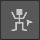
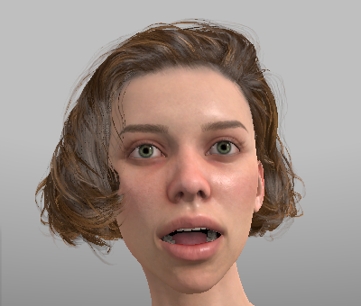
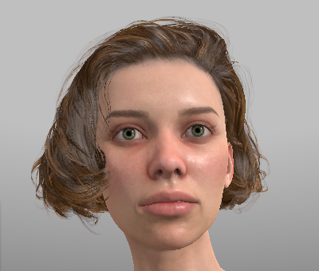
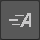
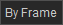

Advanced Animation
Animation Retargeting 
From time to time when using 3rd party animations on Character Creator characters, there are apparent errors arising from a mismatch between the source animation skeleton and the Character Creator skeleton.
The most common errors are ‘hunched’ shoulders and malformed hands. Many Unity users will also encounter the ‘open mouth’ issue wether they use Character Creator or not; this being an artefact of the Mechanim animation system and the way it handles open/closed jaw data.
To this end, a simple tool-set has been provided to interactively adjust problematic aspects of the animation with real-time preview of those adjustments directly onto the target model (via the animation player). A simple tool to correct only open jaw data has been included as a bonus.
The retargeting tools are available Only In The Preview Scene by pressing the Animation Adjustment & Retargeting button.
This will bring up a fixed window in the bottom-left corner of the Scene View (Unity 2020) or a dragable overlay window (Unity 2021+).
Animation Retarget Tools Window
Animation Retarget Tools
The animation retarget tools will operate on the currently selected Scene Model and Animation in the Animation Playback section of the Character Preview Tools window.
Selected Model and Animation
Any Adjustments made can be previewed on the scene model using the animation playback (straightforward Play or spool through the animation with the Time slider).
The adjusted animation can be saved into the ‘home directory’ of the scene model by pressing the save button.
Specifically the animation will be saved to <model FBX dir>/Animations/<Model Name>/ (The project explorer will be focused onto this directory when the animation is saved).
The animation will be renamed to <Model name>_<Original animation name>.anim - Any illegal filesystem characters will also be stripped out and replaced with a ‘-’ symbol.
Multiple saves will not overwrite; the animation name will instead be appended with an increasing ‘.000’ ‘.001’ for each save.
The animation can be reset to it’s original state at any time by pressing the reset button.
The slider settings lock button will preserve the slider values when you change the animation in the animation selector. Thus you can process multiple animations from the same source whilst preserving the settings between animation selections. Using the reset button will remove the lock and return all the values to zero.
No changes are ever made to the original animation - the process is entirely non destructive.
Hand Correction
Three options are available for hand correction:
Original This option will use the original data for both hands in the animation track. This option can be selected to undo any hand changes made by the other options.
Open This will change all of the hand pose data in the animation into a static open hand pose.
Closed This will change all of the hand pose data in the animation to a static closed hand pose.
Select either with the radio button or cycle through the options by pressing the hand icon .
Original |
Open |
Closed |
NB The original pose is specific to the source animation (the one illustrated above is slightly malformed to demonstrate the potential utility of the tool).
Animation Track Correction
The Animation Track Correction controls allow the adjustment of specific portions of the animation where mismatches may occur. i.e the Shoulders, Arms, Legs, Heels and the Vertical displacement of the animation (Height).
Correction Controls
The result of each control’s action is presented visually below:
Shoulder Correction, Adjust the Up-Down displacement of the Shoulders across the whole animation. |
|
Arm Correction, Adjust the Upper Arm Up-Down rotation. Controls the ‘lift’ of the arms. |
|
Arm Flexion Correction, Controls the forward and back upper arm rotation relative to the clavicle. |
|
Leg Correction, Adjust the Upper Leg In-Out rotation. Controls the width of the character’s stance. |
|
Heel Correction, Adjust the angle of the Foot Up-Down rotation. Controls the angle of the heel. |

{kind=link}
{kind=link}
{kind=link}
{kind=link}
{kind=link}
{kind=link}
{kind=link}
The effect of each of the controls will be applied across the whole animation (the controls are not keyable). These controls are only intended as a minor corrective measure; should you require more in-depth corrections then consider using the Blender tools for Character Creator/iClone which allow the use of the Rigify control rig in a sophisticated animation package.
Jaw Open Correction [Retarget Tools]
If an animation is imported without any proper jaw data then the Unity Mechanim system will construct a placeholder animation curve called “Jaw Close” with ‘0’ as each keyframe value; however Jaw Close = 0 means that the jaw is open.
This can be remedied by hand by making a duplicate of the animation clip then editing all the keyframes in the Jaw Close animation curve to have a value of 1.
Alternatively you can use the retarget tool and press the close jaw toggle
{kind=link}
The icon will change between open and closed mouth to show which mode its in.
Caution
This feature will overwrite any jaw data in the animation curve and replace the whole animation with ‘Jaw Closed’. As such, it should only be used when 3rd party animations are playing with a permanent open mouth.
 |
 |
- Original curve data. |
- Closed jaw curve data. |
Jaw Open Correction [Standalone]
A quick alternative means of performing ‘jaw open’ correction has also been provided.
Navigate in the project browser to the fbx which contains the animation you wish to close the jaw for.
Right click and select the Quick Animation Processing -> Process Jaw Animations option.
All of the animations in the fbx will be processed with a closed jaw and saved into the same folder as the source fbx file.
The animations will be renamed to <FBX name> - <Animation Clip Name>.anim (illegal filesystem chars will be stripped out and replaced with a ‘-’ symbol).
Again, multiple saves will not overwrite; the animation name will instead be appended with an increasing ‘.000’ ‘.001’ for each save.
If any jaw data is present in the animation then the process will notify with a console warning and fail. An option to force processing is available at Quick Animation Processing -> Process Jaw Animations (Force)
BlendShape Retargeting
When the selected animation clip contains BlendShape animations (for example iClone AccuLips or facial expression performances) then these often do not play correctly on a different character model due to differences in the face objects (eyebrows, beards, moustaches etc). This is illustrated below with the ExPlusFacial Demo animation being played on a character with extra face ‘furniture’.

Face objects not obeying Blend Shape animations
The BlendShape Retarget function will copy the existing BlendShape animation data in the currently selected Animation and copy it to all of the applicable objects in the currently selected Scene Model (which must contain the appropriate BlendShape definitions) allowing them to animate correctly.
{kind=link}
Retarget Quality:
The quality of the retargeting is heavily dependent on the generational differences between the target model and animation’s model. Thus the respective facial profiles used on the model and source animation have a large influence on which data can be properly retargeted.
Best results are obtained when the animation and target model have the same facial profiles.
The tool provides a visual status which gives an indication of the potential retargeting quality. This compares the facial profiles of the target model and and selected animation and assesses the overlap of available BlendShapes between the two.
No BlendShape animation is detected, so no retarget is possible. |
|
Significant mismatch between the BlendShape animation data and the available BlendShapes in the target model, so significant amounts of data may be omitted. [Usually when transferring data from more complex CC4 facial profiles to very early and much simpler facial profiles] |
|
Partial mismatch of BlendShapes, with a smaller potential data omission. [Usually encountered when transferring between CC3 ExPlus and CC4] |
|
The BlendShapes in the animation and target model match and no data will be omitted. |
A Retargeting quality report will be provided in the console after the process is complete (see below for usage). This will list all of the successful BlendShape mappings, and any that couldn’t be remapped.
{kind=link}
Retargeting quality report (Click to enlarge)
The above example report shows a BlendShape animation from a CC4 Character being retargeted to a CC3 ExPlus character, and shows that the animation data contains BlendShapes that aren’t available on the simpler target model.
Usage:
Warning
When exporting from iClone, ensure in the advanced options that ‘Mouth Open as Morph’’ is NOT selected. Otherwise corruption of the BlendShape data may occur.
Select the appropriate Scene Model and source Animation in the Animation Playback section of the Character Preview Tools window
Press the BlendShape Retarget button. There will be a brief pause after which the updated animation can be previewed using the normal Animation Playback functions.
The Retargeting quality report can be reviewed in the console (see above)
Once you are happy with the BlendShapes the animation can be saved (this will save all of the adjustments made with the animation retarget tool) using the save button.
Once the BlendShape retarget is complete, the animation player will show (for our example) the following:

Face objects now have proper animation data
Note
Use of the ‘Jaw Close’ function will likely interfere with facial BlendShape animations and is best avoided when dealing with them.
Alembic Texture Retargeting 
The Alembic file format is used to store baked geometry from an animated scene (amongst other things). In the context of iClone exports, it is used to capture baked Soft Cloth physics for further use in a different rendering or lighting package.
An exported Alembic file can be imported into Unity, however it will lose all of its material and texture data and appear as a blank white model.
The Alembic Texture Retarget function allows the automated transfer of material and texture data from a Character Creator/iClone character onto the corresponding Alembic export from iClone.
{kind=link}
Requirements
The use of Alembic (.abc) files requires the installation of the Alembic package from the ‘Unity Registry’ please see the Optional Installation section for details.
Workflow - iClone to Unity [Experimental]
In iClone, Set up the character to be animated and animate it however you wish.
In the iClone Project window; ensure Soft Cloth - Bake Animation is selected in the Global Physics Settings section.
{kind=link}
On the animated character ensure that Activate Physics is enabled for all of the objects that need to have their physics simulation baked.
{kind=link}
In the animation playback pane ensure that the Time Mode is set to By Frame. 
Play the animation through once to cache the physics data as a vertex animation track for each applicable object. This is shown in the timeline below:
{kind=link}
Physics baked as Soft Cloth Vertex Animation tracks
Now export the animated character as FBX for Unity see: Export From iClone (this will be the reference model for textures and materials - so no animation data is needed). Give the model a simple name <MODEL_NAME>.
Now export the character as Alembic with the file format set to Ogawa and Split Mesh by Material selected.
{kind=link}
Name it <Your choice of animation name>.abc
Once everything is exported, it must be transferred into Unity.
Open your unity project and drag in the FBX export you made earlier. You should end up with a file structure like this:
<Import Folder>
|-- <MODEL_NAME>.fbm
|-- textures
|-- <MODEL_NAME>.fbx
|-- <MODEL_NAME>.json
Create a folder in the <Import Folder> called “Alembic” with a sub-folder called <MODEL_NAME> and place the exported Alembic file (<Your choice of animation name>.abc) inside it.
The folder layout should now be:
<Import Folder>
|-- Alembic
| |-- <MODEL_NAME>
| |-- <Your choice of animation name>.abc
|
|-- <MODEL_NAME>.fbm
|-- textures
|-- <MODEL_NAME>.fbx
|-- <MODEL_NAME>.json
Tip
This file structure is designed to allow placing of multiple models in <Import Folder> so that they don’t interfere with each other.
Multiple different Alembic files may be placed in the ‘Alembic/<MODEL_NAME>’ folder. They will all be processed at once.
Once the files are all imported into the correct place then can then be processed with the CC/iC Import Tools for Unity.
Open the import tool and for the Reference Model (<MODEL_NAME>.fbx) follow the procedure here: Initial Processing. This will create all the materials needed to properly display the model.
Finally press the Alembic Texture Retarget button to create a prefab which has all of the material data from the Reference Model correctly applied to the Alembic Animation. (Multiple .abc files will give multiple prefabs).
The project explorer will be automatically focussed onto the prefab directory (which will be <Import Directory>/Alembic/<Model_Name>/Prefabs/)
The generated prefabs can now be freely used in your scenes. The video below is an iClone baked Soft Cloth simulation exported as Alembic with materials reconstructed from an fbx exported reference model, played with the Unity timeline.
Tip
The generated prefabs are only pointers to the animation and material information - they do not use up any extra disk space compared to the enormous size of the .abc files